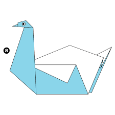
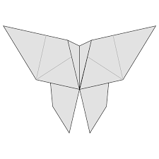

Camel
- Camel's ears are furry
- Camel can move easily across the sand because of its specially designed feet
- Where they find water, they will drink as much as possible

Chameleon
- Chameleons are reptiles that are part of the iguana suborder
- Changing skin color is an important part of communication among chameloens
- Most chameleons have a prehensile tail that they use to wrap around tree branches

Pigeon
- Pigeons are incredibly complex and intelligent animals
- Pigeons are renowned for their outstanding navigational abilities
- During the World War era, Pigeons were known to be faster than telegraph messages
-

Teddy Bear
- Bears are extraordinarily intelligent animals
- Bears grieve deeply for others
- Bears have excellent senses of smell, sight and hearing

Panda
- Pandas are lazy — eating and sleeping make their day
- An adult can eat 12–38 kilos of bamboo per day!
- Their eyes are different from the eyes of normal bears

Flying Cicada
- Cicadas are harmless and can't bite or sting
- They are about the size of a grain of rice when they drop from a tree branch to the ground and start digging
- The loud whirring or buzzing sound you hear is an all-male cicada chorus

Swan
- This majestic and beautiful animal is well-known for being graceful and quite peaceful to look at
- They are very territorial during mating season
- They have their own constellation

Butterfly
- There are almost 20,000 butterfly species
- Butterflies use their feet to taste
- Butterflies Can't Fly If They're Cold